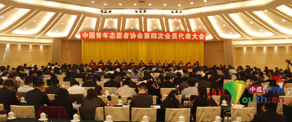

中国青年志愿者协会第四次全国代表大会召开
桂电志愿者网 日期：2018-07-22 来源：

中国青年志愿者协会第四次全国代表大会在广州召开 中国青年网记者李延兵 摄
中国青年网广州12月4日电（记者李延兵 连瑞谦 张婷）12月3日，在第29个“国际志愿者日”到来之际，中国青年志愿者协会第四次全国代表大会在广州召开。中央文明办专职副主任徐令义、民政部副部长宫蒲光、团中央书记处常务书记贺军科出席会议并讲话，团中央书记处书记汪鸿雁代表中国青年志愿者协会第三届理事会作了题为《以青春梦想用实际行动推动青年志愿者事业在奋力实现中国梦进程中谱写新篇章》的工作报告，来自全国各地的240多名理事会员代表参加会议。
徐令义代表中央文明办对大会的胜利召开表示热烈祝贺，指出青年志愿者是我国志愿服务事业的主要开创者和重要推动力量，并希望中国青年志愿行动不断总结成功经验，发挥自身优势，锐意改革创新。要在“围绕中心、服务大局”中争当排头兵，组织动员青年积极投身全面深化改革的伟大事业；要在培育和践行社会主义核心价值观中争当排头兵，努力营造社会主义精神文明建设的良好社会氛围；要在推动志愿服务制度化建设中争当排头兵，推动志愿服务事业逐步实现规范化、常态化发展；要在加强志愿服务组织建设中争当排头兵，切实发挥青年志愿者协会的重要作用。
宫蒲光指出，多年来，在中央文明委的正确领导、中央文明办的统筹指导下，在民政部、共青团中央等各有关部门的积极推动下，我国志愿服务制度不断健全，志愿服务队伍不断壮大，志愿服务组织不断发展，志愿服务领域不断拓展，志愿服务成效不断呈现。中国青年志愿者协会作为全国性志愿服务组织，20年来，在志愿服务领域做了大量工作，积累了宝贵经验。在新的起点上，希望协会进一步发挥好行业引领作用和行业服务作用，进一步加强内部治理结构和能力建设，最大程度地团结和凝聚广大青年参与志愿服务，推动青年志愿服务事业健康有序发展。
贺军科强调，党的十八大、十八届三中全会对广泛开展志愿服务活动提出了明确要求，习近平总书记多次对志愿服务工作作出明确指示，为青年志愿者事业长远发展指明了正确方向、提供了根本遵循。青年志愿者事业是新的历史条件下共青团的一大成功创举，它丰富了社会主义精神文明建设的活动载体，拓宽了广大青年成长成才的有效途径，实现了动员青年与动员社会的有机统一，打造了新时期共青团事业的重要品牌。
贺军科指出，当前，实现中国梦的宏伟目标为青年志愿者事业开启了新时代，全面深化改革、全面推进依法治国为青年志愿者事业提出了新要求，当代青年的发展变化为青年志愿者事业提出了新课题。青年志愿者事业要始终围绕党和国家的中心工作谋篇布局，着力引导广大青少年在志愿服务中培育和践行社会主义核心价值观；要更加重视对志愿者的关怀与激励，用创新的体制机制激发志愿服务工作活力。
汪鸿雁在报告中全面回顾了中国青年志愿者协会过去四年的工作，肯定了协会在深化品牌建设、加强战略规划、建立健全工作机制、弘扬志愿精神等方面的工作成绩。并从健全组织网络、完善项目体系、抓好队伍建设、搭建工作平台、弘扬志愿文化、加强制度保障等方面对今后一个时期的工作进行了部署和安排。
大会选举产生了新一届理事会，汪鸿雁当选为中国青年志愿者协会会长，侯宝森、杨松、白岩松、申兆军、刘政磐、许晓艳、杨扬、佟丽华、徐本禹、谢海山、谭建光当选为协会副会长，杨松兼任协会秘书长。协会大力调整成员组成结构，广泛吸纳各类志愿服务组织，北京市志愿服务联合会等343个组织成为首批中国青年志愿者协会单位会员。为团结凝聚社会各方专业人员共同支持、参与青年志愿服务事业深入开展，协会成立了基金管理与社会合作委员会、项目发展委员会、权益保护工作委员会、文化宣传工作委员会、理论研究工作委员会、高校志愿者工作委员会、企业志愿者工作委员会等7个专门工作委员会，400余名在各领域具有丰富工作经验、较强社会影响力、积极支持和参与志愿者工作的各界人士成为专门工作委员会委员，他们将在各自领域为青年志愿服务事业发展出谋划策、贡献力量。
中国青年志愿者协会成立于1994年12月，是最早成立的全国性志愿服务组织。协会自成立以来，大力弘扬“奉献、友爱、互助、进步”的志愿精神，广泛开展志愿服务活动，形成了中国青年志愿者助残阳光行动、共青团关爱农民工子女志愿服务行动、大学生志愿服务西部计划、中国青年志愿者海外服务计划、大型赛会志愿服务及抢险救灾等品牌项目，得到全社会的认同和赞誉。协会先后荣获“全国抗震救灾英雄集体”、“全国民族团结进步模范集体”、“国家西部大开发突出贡献集体”等荣誉称号。
【责任编辑：李博晶】